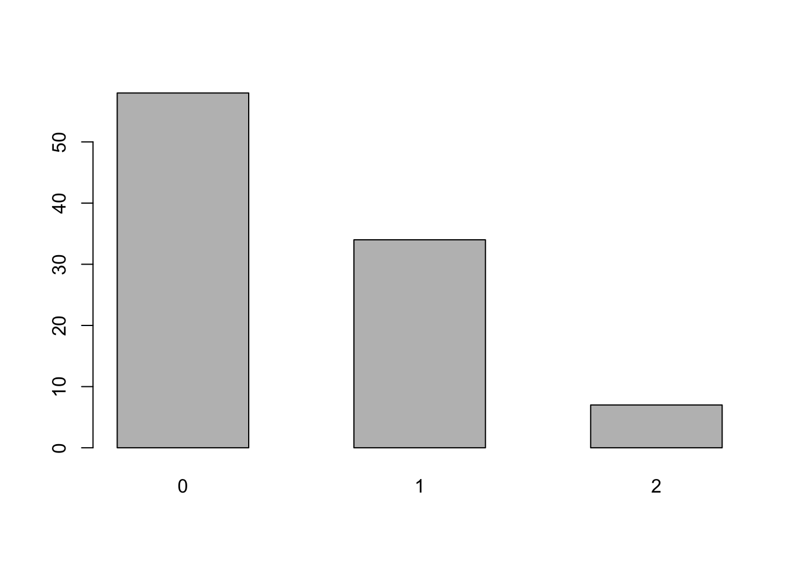
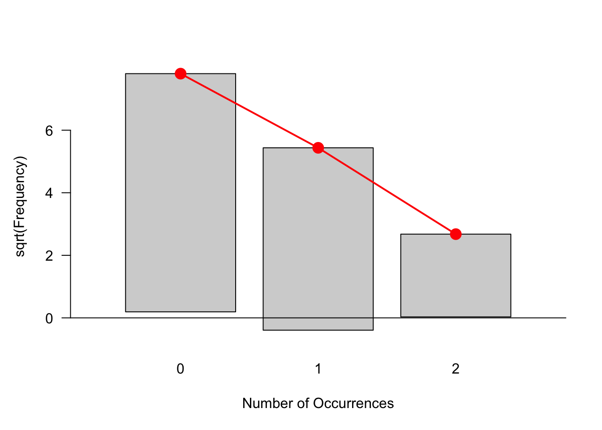
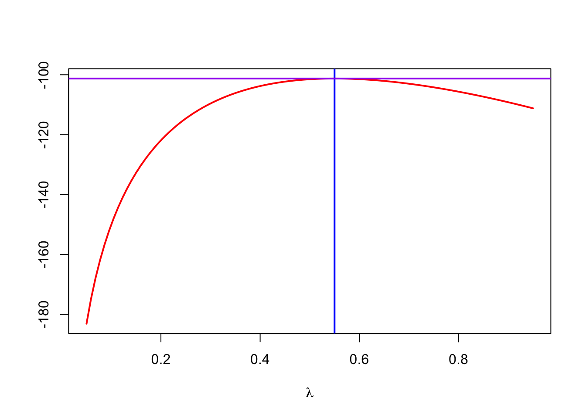
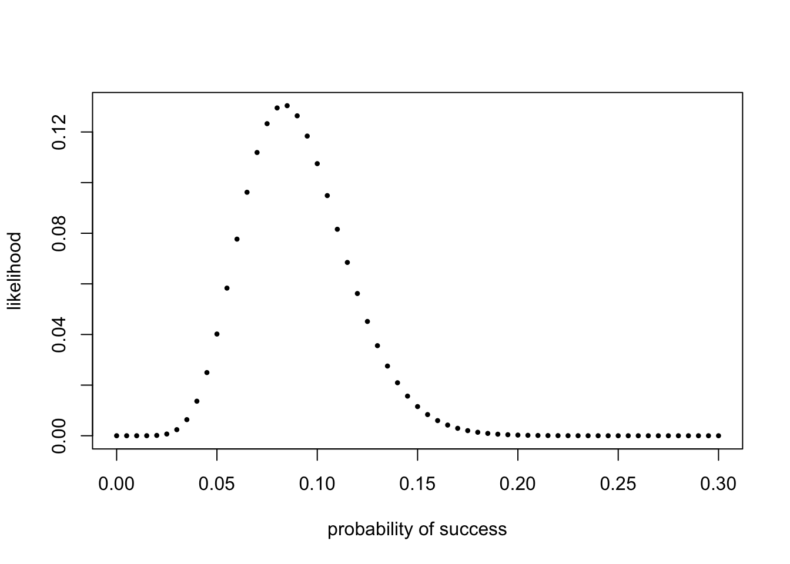
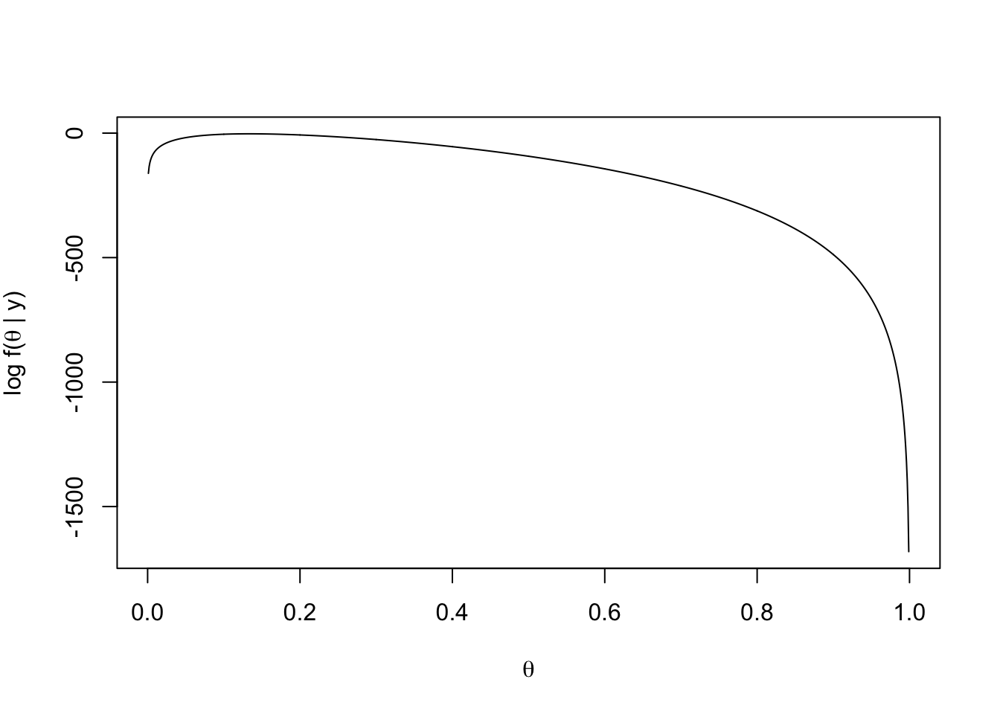

Chapter 3 Statistical Modeling
前一章的基本思路是已知这个数据符合某分布，在这个前提下，看出现特定值是否合理。但实际情况中不可能提供给研究者完美的符合某分布的数据，总是乱糟糟一团过来，然后看着分析去吧。如果要确定这个数据的统计学特征，需要从数据本身出发进行推断，这个过程即统计推论（statistical inference）。本章主要介绍这个过程。
原书中列出本章目标如下：
- 明确概率（probability）和统计(statistics)的区别。
- 应用直方图/矩形图/条形图（histograms），以及其他可视化工具，拟合数据到某分布。
- 通过数据模拟，使用极大似然率（maximum likehood）方法进行统计推论。
- 基于有预知信息的数据进行统计推论。这里将使用贝叶斯方法，引入新的特定分布。我们同样还会使用数据模拟，观察贝叶斯方法和极大似然率方法的差异。
- 使用统计模型和估测，计算（evaluate）二元分布和多元分布的依赖性。
- 分析一些历史上有趣的基因数据，数据以表格形式组织。
- 针对因变量数据（dependent data）应用马尔科夫链。
- 在基因组数据中做一些计数导向的练习，学习操作基因组数据的Bioconductor类型数据。
3.1 统计和概率模型的区别
前一章的统计模型，是已知数据所符合的分布，通过分布的参数，求出一个“事件（event）”的可能。如在表位一例中，已知数据符合 \(\lambda = 0.5\) 的泊松分布，然后可以求得发生次数大于等于7的事件概率为 \(10^{-4}\) 。 这里泊松分布就是已知的原假设。

Figure 3.1: 已知分布，求某一事件概率
但实际上，得到的数据未必预先知道符合什么分布，比如有时你就是测出一堆蛋白或者基因序列来。这种时候，可能就需要倒过来计算，看看这些数据符合什么分布（概率模型 F），并求得分布模型的参数，这个过程就是统计推论。
3.2 一个简单的统计建模
建模首先要看数据符合什么分布。分布有很多，二项分布、多项分布、泊松分布，这是对离散变量的，正态分布、指数分布等，是针对连续变量的。有时候变量过于复杂，一种分布难以涵盖其特点，也会用混合模型来拟合，这个第四章会讲到。
还是看上一章用过的表位数据，这次假设提前不知道分布。并且先把极值去掉。
## e99
## 0 1 2
## 58 34 7
要看数据是否符合某分布，原书介绍了一种拟合优度检验图（goodness-of-fit diagram）的方法，叫他娘的什么根图（rootogram），这方法是2016年提出来的，还没有经过时间的历练，而且是否符合分布这样的工作，实际工作中很少遇到，稍微看看就行了。
library("vcd") # 需要这个包。
gf1 = goodfit(e99, "poisson") # goodfit这个函数，拟合数据。
rootogram(gf1) # rootogram作图，红点是理论分布所在的位置，然后把实际数上提或者下压。
越符合分布，差别的越小。看来这99个数提的压的都不多，还算符合泊松分布，下一步就是估计分布的参数，这里就是\(\lambda\)。
估计\(\lambda\)的方法就是通过数据计算最接近的\(\hat\lambda\)，这叫极大似然估计（maximum likelihood estimator, MLE）。当然可以通过一系列 rpois(100, 1)、rpois(100, 2)、rpois(100, 3)。。。来看到底哪个更符合，但首先这样工作量很大，其次\(\lambda\)的值可以是小数，不一定试多少次，实际通过数学变换可以做的更优雅一点。
计算当泊松分布\(\lambda = m\)时，见到e100这个数据的概率。
\[\begin{equation*} \begin{aligned} P(58 \times 0, 34 \times 1, 7 \times 2, \text{one }7 \;|\; \text{data are Poisson}(m)) = P(0)^{58}\times P(1)^{34}\times P(2)^{7}\times P(7)^{1}.\end{aligned} \end{equation*}\]
当\(\lambda = 3\) 时，\(P(0) = dpois(0, lambda = 3)\)。利用向量计算特性，可以这样计算：
## [1] 1.392143e-110这个可能性就叫\(\lambda\)的似然函数（likelihood function），公式写作，注意这个连乘符号\(\prod\)，其公式写法和连加符号\(\sum\)基本一致：
\[\begin{equation*} L\left(\lambda ,\,\ x=(k_1,k_2,k_3,...)\right) = \prod_{i=1}^{100} f(k_i) \end{equation*}\]
鉴于里面连乘的数都太小，取log后再计算会比较容易，对手算和电脑都是如此。当log后，m满足这个公式取值最大的时候，m就是\(\hat \lambda\)。 可以按如下方式进行模拟。
loglikelihood = function(lambda, data = e100) {
sum(log(dpois(data, lambda)))
}
lambdas = seq(0.05, 0.95, length = 100)
loglik = vapply(lambdas, loglikelihood, numeric(1)) #后面这个numeric（1）是对返回结果的控制，就要1个数字，其实这里没必要，因为loglikelihood只返回一个数字，但作为参数必须写上。
plot(lambdas, loglik, type = "l", col = "red", ylab = "", lwd = 2,
xlab = expression(lambda))
m0 = mean(e100) # 为啥平均值就是要找的点？
abline(v = m0, col = "blue", lwd = 2)
abline(h = loglikelihood(m0), col = "purple", lwd = 2)
## [1] 0.55实际上使用vcd包里的goodfit函数，也能计算出来，轮子已经制造好了。
## [1] "observed" "count" "fitted" "type" "method" "df"
## [7] "par"## $lambda
## [1] 0.55如果使用0.55 重新做上一章的表位检测例题，还是有些不同的。
| 频率 | 1 | 2 | 3 | 4 | 5 | 6 | 7 | 8 | 9 |
|---|---|---|---|---|---|---|---|---|---|
| 按0.5 | 9 | 23254 | 60529 | 14528 | 1531 | 141 | 8 | 0 | 0 |
| 按0.55 | 3 | 15416 | 62606 | 19239 | 2508 | 209 | 17 | 1 | 1 |
下面解释前面的疑惑：为什么mean（e100）能使似然率最大？
\[\begin{align} \log L(\lambda, x)=&\sum_{i=1}^{100} -\lambda +k_i \log\lambda-\log (k_i!) \\ =&-100\lambda +\log\lambda\left(\sum_{i=1}^{100} k_i\right) + \text{const.} \end{align}\]
要求得能使上面函数取最大值的\(\lambda\)，我们对 \(\lambda\) 求导（derivative），使之成为0。
\[\begin{align} \frac{d}{d\lambda}\log L=&-100 +\frac{1}{\lambda}\sum_{i=1}^{100} k_i \stackrel{?}{=}0 \\ \lambda=&\frac{1}{100}\sum_{i=1}^{100} k_i=\bar{k} \end{align}\]
由此求得，当\(\lambda = \bar k\) 的时候，函数取值最大。这一段是已知分布，推断参数，还有一类问题是求那种分布最合适，属于拟合优度（goodness of fit）的问题，后面会涉及。
3.2.1 这就是经典数据的经典统计？
经典统计检验框架下，只考虑一个模型，称数据的原假设（null model）。这种只考虑一个模型的原假设，不管具体数据出自哪个处理，哪个组别，统统认为是出自同一分布的随机数据。这样一来，分析者只能跟检验这些数是否真的出自这个模型、按这个模型出现这些数的概率有多少之类的问题较劲，没有别的分析方向。如果符合一个模型了，比如泊松分布，我们就能知道出现某个异常值的概率到底是多小。
3.2.2 讲到了一点回归分析
对一般的连续变量回归模型 \(y = ax+b + e\)， 要求a和b，残差（residuals）e的要符合正态分布，还能估算这个分布的变异（variance）。
对离散变量（count data），也可以应用回归模型，但残差分布不是正态的，需要应用广义线性模型（generalized linear models）。第八章、第九章中分别对RNA序列、下一代测序数据和16SrRNA数据应用该分析。
3.3 二元分布和极大似然率
遇到的二元分布实际数据经常是n个事件（trials），结果已知但不知道成功概率是多少，要去估算。比如知道扔了120次硬币，10次正面朝上，则可以估计概率\(\hat{p}=\frac{1}{12}\)。也可以按概率从小到大挨个试试。
probs = seq(0, 0.3, by = 0.005) # 从0到0.3，每0.005一个。
likelihood = dbinom(10, prob = probs, size = 120)
plot(probs, likelihood, pch = 16, xlab = "probability of success",
ylab = "likelihood", cex=0.6)
## [1] 0.085差球不多，在0.005精度下，是最接近\(\frac{1}{12}\)的了。不明白为啥要这么搞一遍，可能为了让更加熟悉函数吧。
3.3.1 可能性就是概率，概率就是可能性的概率
一方面，在给定参数的条件下，概率分布能告诉我们见到特定数据的可能性是多少；另一方面，当数据确定时，我们去寻求最可能出现这些数据的分布。
如300次观测，40次成功。按排列组合计算，
\[\begin{equation} f(\theta\,|\,300,40) = f(40\,|\,300,\theta)={300 \choose 40} \, \theta^{40} \, (1-\theta)^{(300-40)}. \tag{2.5} \end{equation}\]
两边log后，得：
\[\begin{equation*} \log f(\theta |y) = 115 + 40\log(\theta)+(300-40)\log(1-\theta). \end{equation*}\]
按这个做个函数，然后作图。
loglikelihood = function(theta, n = 300, k = 40) {
115 + k * log(theta) + (n - k) * log(1 - theta)
}
thetas = seq(0, 1, by = 0.001) # 一串串概率试一试
plot(thetas, loglikelihood(thetas), xlab = expression(theta),
ylab = expression(paste("log f(", theta, " | y)")),type = "l")
发现虽然40/300=0.13333最合适，但还有一段一直到0.2左右，都能出现最大可能。这一特性将会在后面的贝叶斯方法中见到。
3.4 多元数据
对DNA的组成，AG嘌呤，CT嘧啶，四种碱基构成多元数据。这里用Bioconductor包的函数，读取一段真正的DNA序列，是金黄葡萄球菌（Staphylococcus aureus）的fasta格式数据。
安装需要这样：
if (!requireNamespace(“BiocManager”, quietly = TRUE)) install.packages(“BiocManager”)
BiocManager::install(“Biostrings”)
折腾了这么久，终于见到真的数据了。。。可以看看数据结构，是2650条DNA序列，主体是一串串的ATGC字母，有名字，有宽度。可以用函数看看各碱基出现频率。
## A T G C
## 522 392 229 219为什么用[[]]，不用[]？因为[[]]表示的火车这节车厢里面的货物，[]表示的是这节车厢。
然后进入有意义的问题——通过对比前十个基因的碱基出现频率是否一致，来推断其遗传特征是否相同。
letterFrq = vapply(staph, letterFrequency, FUN.VALUE = numeric(4),
letters = "ATGC", OR = 0) # 计算各基因碱基频率,并处理好从哪个基因出来的。
colnames(letterFrq) = paste0("gene", seq(along = staph)) # 4行、2650列，一列是一个基因。
letterFrq[,1:10] #查看下前10列## gene1 gene2 gene3 gene4 gene5 gene6 gene7 gene8 gene9 gene10
## A 522 413 85 411 685 887 275 510 487 191
## T 392 352 74 327 531 793 250 445 357 252
## G 229 193 56 207 423 586 169 316 263 142
## C 219 176 31 168 293 395 137 244 180 111tab10 = letterFrq[, 1:10] # 这就是前10个基因，ATGC各有多少个
computeProportions = function(x) {x/sum(x)} # 构造个函数，大概为了下一步好用apply。
prop10 = apply(tab10, 2, computeProportions) # 对列计算比例，即对每个基因计算碱基比例。
round(prop10, digits = 2) # 取两位小数## gene1 gene2 gene3 gene4 gene5 gene6 gene7 gene8 gene9 gene10
## A 0.38 0.36 0.35 0.37 0.35 0.33 0.33 0.34 0.38 0.27
## T 0.29 0.31 0.30 0.29 0.27 0.30 0.30 0.29 0.28 0.36
## G 0.17 0.17 0.23 0.19 0.22 0.22 0.20 0.21 0.20 0.20
## C 0.16 0.16 0.13 0.15 0.15 0.15 0.16 0.16 0.14 0.16## A T G C
## 0.3470531 0.2999714 0.2011442 0.1518313后面又通过蒙特卡洛检验这10个基因碱基含量的合理性。略。
3.5 卡方分布 （\(\chi^2 distribution\)）
基本统计，卡方检验可以替代复杂的模拟，介绍了一些应用。
3.6 查格夫定律（Chargaff’s Rul）
来自任何生物体的任何细胞的DNA应该具有1：1的嘧啶和嘌呤碱基比例，更具体地说，鸟嘌呤的量应该等于胞嘧啶，并且腺嘌呤的量应该等于胸腺嘧啶。这种模式存在于DNA的两条链中。它们是由奥地利出生的化学家Erwin Chargaff 在20世纪40年代后期发现提出的。
## A T C G
## Human-Thymus 30.9 29.4 19.9 19.8
## Mycobac.Tuber 15.1 14.6 34.9 35.4
## Chicken-Eryth. 28.8 29.2 20.5 21.5
## Sheep-liver 29.3 29.3 20.5 20.7
## Sea Urchin 32.8 32.1 17.7 17.3
## Wheat 27.3 27.1 22.7 22.8
## Yeast 31.3 32.9 18.7 17.1
## E.coli 24.7 23.6 26.0 25.73.7 贝叶斯方法
待续。。。